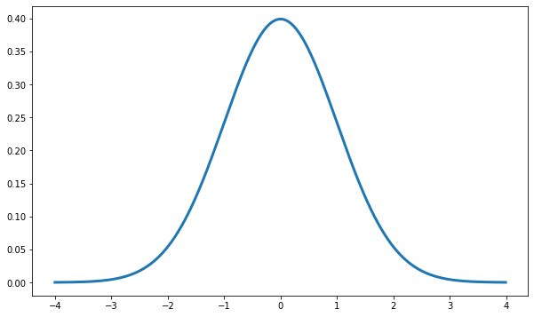
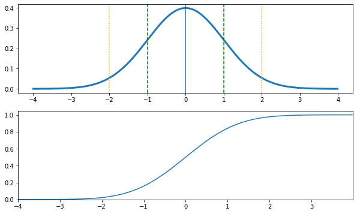
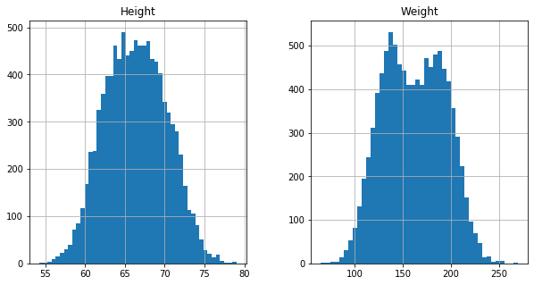
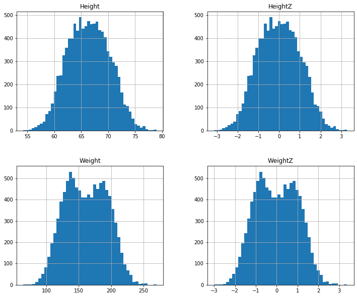
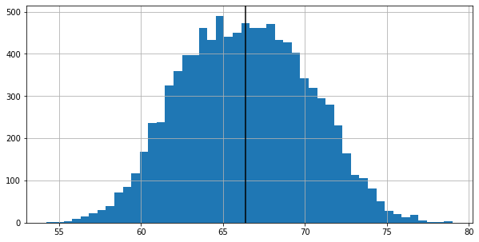
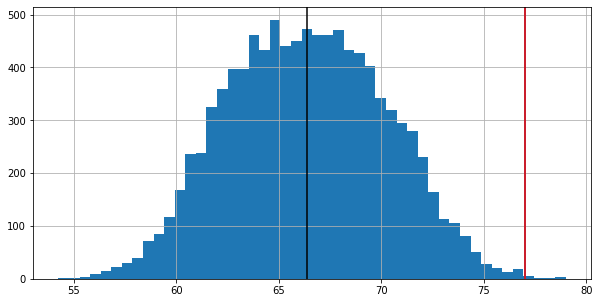
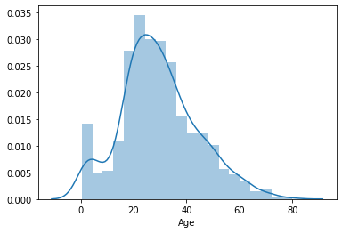
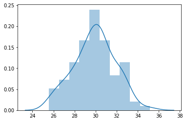
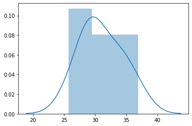
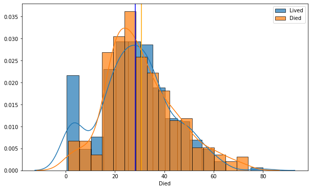

Sect 18 Pt3-19 Central Limit Theorem#
online-ds-pt-100719
01/17/20
Questions#
CLT clarification
Topics / Question#
Normal distribution
Standard Normal Distribution
Z-tests with Normal Distribution
Sampling
Central Limit Theorem
!pip install -U fsds_100719
from fsds_100719.imports import *
fsds_1007219 v0.6.5 loaded. Read the docs: https://fsds.readthedocs.io/en/latest/
| Handle | Package | Description |
|---|---|---|
| dp | IPython.display | Display modules with helpful display and clearing commands. |
| fs | fsds_100719 | Custom data science bootcamp student package |
| mpl | matplotlib | Matplotlib's base OOP module with formatting artists |
| plt | matplotlib.pyplot | Matplotlib's matlab-like plotting module |
| np | numpy | scientific computing with Python |
| pd | pandas | High performance data structures and tools |
| sns | seaborn | High-level data visualization library based on matplotlib |
Normal Distribution#
The Normal Distribution is symmetrical and its mean, median and mode are equal.
area under curve is equal to 1.0
denser in the center and less dense in the tails
defined by two parameters, the mean (\(\mu\)) and the standard deviation (\(\sigma\)).

import scipy.stats as stats
x = np.arange(-4,4,.01)
y = stats.norm.pdf(x)
fig,ax = plt.subplots(figsize=(10,6),nrows=1)
ax.plot(x,y,zorder=-1,lw=3)
[<matplotlib.lines.Line2D at 0x1a20d78400>]

fig,axes = plt.subplots(figsize=(10,6),nrows=2)
ax =axes[0]
ax.plot(x,y,zorder=-1,lw=3)
# stats.norm.cdf(4)
ax.axvline(0)
ax.axvline(-1,ls='--',c='green')
ax.axvline(1,ls='--',c='green')
ax.axvline(-2,ls=':',c='orange')
ax.axvline(2,ls=':',c='orange')
ax=axes[1]
ax.plot(x, stats.norm.cdf(x))
ax.set(ylim=0,xlim=(x[0],x[-1]))
# fig
[(0, 1.0499637279578975), (-4.0, 3.9899999999998297)]

## Prove percentage rules -
print(round(stats.norm.cdf(1) - stats.norm.cdf(-1),3))
round(stats.norm.cdf(2) - stats.norm.cdf(-2),3)
0.683
0.954
stats.norm.cdf([1,2])
array([0.84134475, 0.97724987])
Standardized Normal Distribution#
Special case of the normal distribution where \(\mu=0\) and \(\sigma=1\)
dfh = fs.datasets.load_height_weight()
dfh.head()
| Gender | Height | Weight | |
|---|---|---|---|
| 0 | Male | 73.847017 | 241.893563 |
| 1 | Male | 68.781904 | 162.310473 |
| 2 | Male | 74.110105 | 212.740856 |
| 3 | Male | 71.730978 | 220.042470 |
| 4 | Male | 69.881796 | 206.349801 |
Z-Scores#
dfh.hist(bins='auto',figsize=(10,5))
array([[<matplotlib.axes._subplots.AxesSubplot object at 0x1a23e4f9b0>,
<matplotlib.axes._subplots.AxesSubplot object at 0x1a23dcb5c0>]],
dtype=object)

Z-score#
The standard score (more commonly referred to as a \(z\)-score) is a very useful statistic because it allows us to:
Calculate the probability of a certain score occurring within a given normal distribution and
Compare two scores that are from different normal distributions.
Any normal distribution can be converted to a standard normal distribution and vice versa using this equation:
where \(x\) is an individual data point
\(\mu\) is the mean
\(\sigma\) is the standard deviation
dfh['HeightZ'] = (dfh["Height"] - dfh['Height'].mean())/ dfh['Height'].std()
dfh['WeightZ'] = (dfh["Weight"] - dfh['Weight'].mean()) /dfh['Weight'].std()
dfh.hist(figsize=(12,10),bins='auto')
array([[<matplotlib.axes._subplots.AxesSubplot object at 0x1a25ab3ba8>,
<matplotlib.axes._subplots.AxesSubplot object at 0x1a24f7e978>],
[<matplotlib.axes._subplots.AxesSubplot object at 0x1a24eb7358>,
<matplotlib.axes._subplots.AxesSubplot object at 0x1a24f0a908>]],
dtype=object)

Z-Scoring does not affect the data distribution, just standardizes units#
Statistical Testing with Z-scores and p-values#
Once data is standardized, can start answering questions about population membership usint \(Z\)-Tests
Population vs Sample#

A population is the collection of all the items of interest in a study. The numbers you obtain when using a population are called parameters.
A sample is a subset of the population. The numbers you obtain when working with a sample are called statistics.
What Are Hypotheses ?#
Null Hypothesis: \(H_0\) there is no relationship / the samples come from the same population.
Alternative: \(H_A\)/\(H_1\) there is a relationship / the samples DO NOT come from same distribution
\(\large \alpha\)= 0.05#
What does it mean?
cutoff for judging whether our sample is “significantly” different than the population.
ax = dfh['Height'].hist(bins='auto',figsize=(10,5))
meanH = dfh['Height'].mean()
stdH = dfh["Height"].std()
ax.axvline(meanH,c='k')
fig =ax.get_figure()

potential_alien_lifeform = 77#height
ax.axvline(potential_alien_lifeform,color='red')
fig

H0 = The lifeform’s height comes from the human population.
H1 = The lifesform’s height is significantly different than humans. (its from another population).
dfh['HeightZ'] = (dfh["Height"] - dfh['Height'].mean())/ dfh['Height'].std()
z_alien = (potential_alien_lifeform - meanH) /stdH
z_alien
2.7634470526084107
alpha=0.05
1 - stats.norm.cdf(z_alien)
0.0028597185423705485
One-Sample \(z\)-test#
The one-sample \(z\)-test is used only for tests related to the sample mean.

Set |
\(H_0 \) |
\(H_a\) |
Tails |
|---|---|---|---|
1 |
\(\mu= M \) |
\(\mu \neq M \) |
2 |
2 |
\(\mu \geq M \) |
\(\mu < M \) |
1 |
3 |
\(\mu \leq M \) |
\(\mu > M \) |
1 |
Central Limit Theorem#
The Central Limit Theorem states:
No matter what populations distribtuon shape, the means of samples from the population will form a normal distribution.
The key takeaway from the central limit theorem is that it allows different distributions to be processed as a normal distribution, even when they do not fulfill the normality requirements shown above. We’ll discuss this further when we talk about hypothesis testing.
Here is an interesting youtube video highlighting this phenomenon for now. We will consider this in detail later.
Titanic#
Compare survivors vs non-survivors ages
# !pip install -U fsds_100719
# from fsds_100719.imports import *
dft = fs.datasets.load_titanic(read_csv_kwds={'index_col':0})
# convert column names to lowercase
# dft.columns = [col.lower() for col in dft.columns ]
dft['sex_code'] = (dft['Sex']=='female').astype('int')
dft.drop('Cabin', axis=1,inplace=True)
dft.dropna(inplace=True)
dft.head()
| PassengerId | Survived | Pclass | Name | Sex | Age | SibSp | Parch | Ticket | Fare | Embarked | sex_code | |
|---|---|---|---|---|---|---|---|---|---|---|---|---|
| 0 | 1 | 0 | 3 | Braund, Mr. Owen Harris | male | 22.0 | 1 | 0 | A/5 21171 | 7.2500 | S | 0 |
| 1 | 2 | 1 | 1 | Cumings, Mrs. John Bradley (Florence Briggs Th... | female | 38.0 | 1 | 0 | PC 17599 | 71.2833 | C | 1 |
| 2 | 3 | 1 | 3 | Heikkinen, Miss. Laina | female | 26.0 | 0 | 0 | STON/O2. 3101282 | 7.9250 | S | 1 |
| 3 | 4 | 1 | 1 | Futrelle, Mrs. Jacques Heath (Lily May Peel) | female | 35.0 | 1 | 0 | 113803 | 53.1000 | S | 1 |
| 4 | 5 | 0 | 3 | Allen, Mr. William Henry | male | 35.0 | 0 | 0 | 373450 | 8.0500 | S | 0 |
sns.distplot(dft['Age'])
<matplotlib.axes._subplots.AxesSubplot at 0x1a26a76f28>

import scipy.stats as stats
def test_for_normality(x,alpha=.05):
stat, p = stats.normaltest(x)
print(f"Sample has {len(x)} observations. ")
print(f"Normaltest p-value = {p}")
if p <alpha:
print("[!] The sample is NOT normal.")
else:
print("[i] The sample IS normal.")
test_for_normality(dft['Age'])
Sample has 712 observations.
Normaltest p-value = 0.00011567916063448067
[!] The sample is NOT normal.
Demonstrating How Taking Many Samples Creates a Normal Distribution of Means#
df = dft['Age'].copy()
samples = []
for i in range(100):
samples.append(df.sample(50).mean())
sns.distplot(samples)
test_for_normality(samples)
Sample has 100 observations.
Normaltest p-value = 0.907274628989178
[i] The sample IS normal.

samples = []
for i in range(10):
samples.append(df.sample(20).mean())
sns.distplot(samples)
test_for_normality(samples)
Sample has 10 observations.
Normaltest p-value = 0.8520040297267016
[i] The sample IS normal.
//anaconda3/envs/learn-env/lib/python3.6/site-packages/scipy/stats/stats.py:1450: UserWarning: kurtosistest only valid for n>=20 ... continuing anyway, n=10
"anyway, n=%i" % int(n))

Test if Ages are sig. different between survivors and non-survivors#
dft.head()
| PassengerId | Survived | Pclass | Name | Sex | Age | SibSp | Parch | Ticket | Fare | Embarked | sex_code | |
|---|---|---|---|---|---|---|---|---|---|---|---|---|
| 0 | 1 | 0 | 3 | Braund, Mr. Owen Harris | male | 22.0 | 1 | 0 | A/5 21171 | 7.2500 | S | 0 |
| 1 | 2 | 1 | 1 | Cumings, Mrs. John Bradley (Florence Briggs Th... | female | 38.0 | 1 | 0 | PC 17599 | 71.2833 | C | 1 |
| 2 | 3 | 1 | 3 | Heikkinen, Miss. Laina | female | 26.0 | 0 | 0 | STON/O2. 3101282 | 7.9250 | S | 1 |
| 3 | 4 | 1 | 1 | Futrelle, Mrs. Jacques Heath (Lily May Peel) | female | 35.0 | 1 | 0 | 113803 | 53.1000 | S | 1 |
| 4 | 5 | 0 | 3 | Allen, Mr. William Henry | male | 35.0 | 0 | 0 | 373450 | 8.0500 | S | 0 |
df_lived = dft.groupby('Survived').get_group(1)['Age'].rename('Lived')
df_died = dft.groupby('Survived').get_group(0)['Age'].rename('Died')
grps= dft.groupby('Survived').groups
grps
{0: Int64Index([ 0, 4, 6, 7, 12, 13, 14, 16, 18, 20,
...
873, 876, 877, 881, 882, 883, 884, 885, 886, 890],
dtype='int64', length=424),
1: Int64Index([ 1, 2, 3, 8, 9, 10, 11, 15, 21, 22,
...
865, 866, 869, 871, 874, 875, 879, 880, 887, 889],
dtype='int64', length=288)}
fig, ax = plt.subplots(figsize=(10,6))
sns.distplot(df_lived,ax=ax,label='Lived',hist_kws=dict(edgecolor='k',alpha=0.7))
sns.distplot(df_died,ax=ax,label='Died',hist_kws=dict(edgecolor='k',alpha=0.7))
ax.axvline(df_lived.mean(),color='blue')
ax.axvline(df_died.mean(),color='orange')
ax.legend()
<matplotlib.legend.Legend at 0x1a23bf96a0>

fs.ds.inspect_variables(locals())
| type | size | |
|---|---|---|
| variable | ||
| dfh | DataFrame | 940152 |
| dft | DataFrame | 309472 |
| df | Series | 11416 |
| df_died | Series | 6808 |
| x | ndarray | 6496 |
| y | ndarray | 6496 |
| df_lived | Series | 4632 |
| grps | dict | 240 |
| samples | list | 192 |
| axes | ndarray | 96 |
#[i] set `print_names=True` for var names to copy/paste.
---------------------------------------------
test_for_normality(df_lived)
test_for_normality(df_died)
Sample has 288 observations.
Normaltest p-value = 0.4744594536940786
[i] The sample IS normal.
Sample has 424 observations.
Normaltest p-value = 9.786307175880915e-06
[!] The sample is NOT normal.
stats.t.cdf()
---------------------------------------------------------------------------
TypeError Traceback (most recent call last)
<ipython-input-60-522a9cccfa8d> in <module>
----> 1 stats.t.pdf(2,dft)
//anaconda3/envs/learn-env/lib/python3.6/site-packages/scipy/stats/_distn_infrastructure.py in pdf(self, x, *args, **kwds)
1719 dtyp = np.find_common_type([x.dtype, np.float64], [])
1720 x = np.asarray((x - loc)/scale, dtype=dtyp)
-> 1721 cond0 = self._argcheck(*args) & (scale > 0)
1722 cond1 = self._support_mask(x, *args) & (scale > 0)
1723 cond = cond0 & cond1
//anaconda3/envs/learn-env/lib/python3.6/site-packages/scipy/stats/_continuous_distns.py in _argcheck(self, df)
5239 """
5240 def _argcheck(self, df):
-> 5241 return df > 0
5242
5243 def _rvs(self, df):
TypeError: '>' not supported between instances of 'str' and 'int'